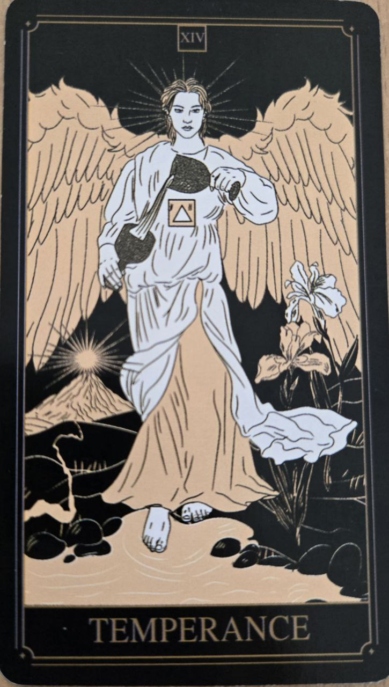

Miernosť je kartou harmónie, rovnováhy a trpezlivého prepájania rôznych prvkov života.
Predstavuje schopnosť nájsť strednú cestu medzi extrémami.
Karta symbolizuje umiernenosť, pokoj a postupný rozvoj. Naznačuje, že najlepšie výsledky často vznikajú postupne, nie náhlymi zmenami.
Pripomína význam trpezlivosti a spolupráce.
Na karte býva anjelská postava prelievajúca vodu medzi dvoma nádobami.
Tento obraz predstavuje rovnováhu, plynulosť a schopnosť spájať rozdielne prvky do jedného celku.
Miernosť je jednou z kariet, ktoré najmenej tlačia na akciu. Namiesto toho zdôrazňuje proces a prirodzený vývoj udalostí.